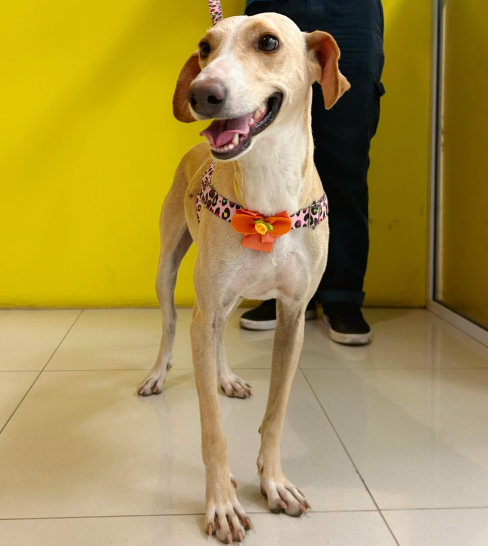
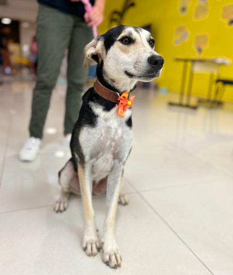
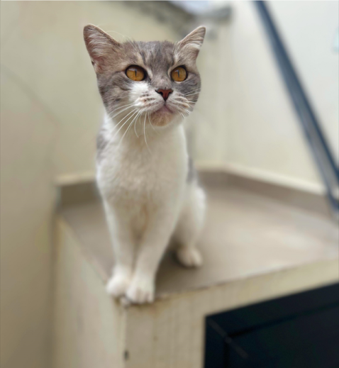
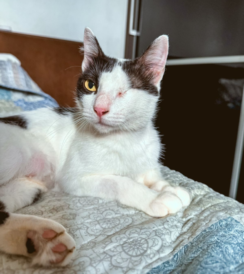

Branca foi retirada de maus tratos, era usada de forma indevida para caça. É muito dócil, querida e brincalhona, mas apresenta um certo grau de medo. Precisa de um lar com muito amor, carinho e paciência.

Luma vivia nas ruas com seu irmão Juca. Ele foi adotado, mas ela ainda segue esperando seu tão sonhado lar. Luma é puro amor e calmaria! Precisa de um lar com muito amor e carinho.

Mimi foi abandonada em uma residência, viveu um tempo na rua até ser resgatada. É uma gatinha muito amorosa e carente!

Luzia foi resgatada após um pedido de ajuda onde foi descrita como um "monstro". No entanto, ao conhecê-la, descobriram que ela é, na verdade, uma princesa assustada e cheia de carinho!